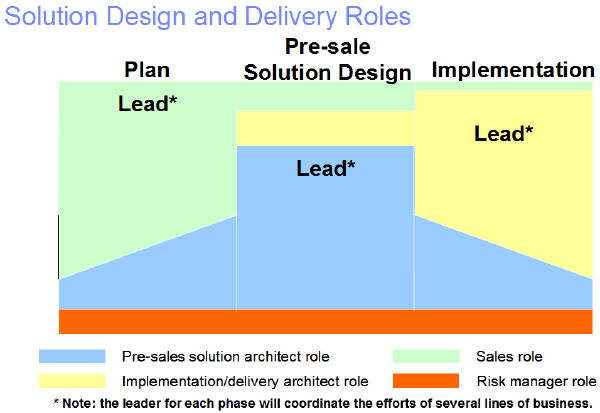
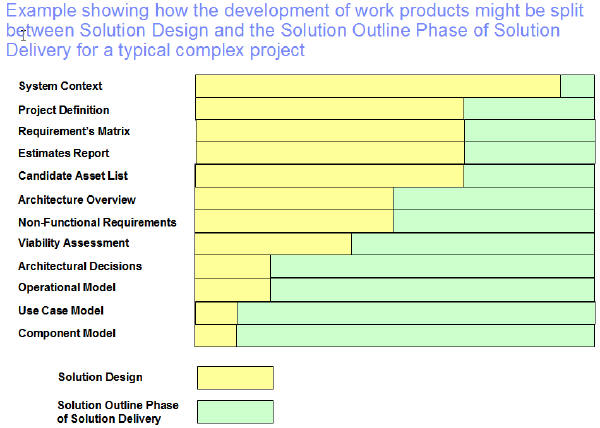

The audience for Team Solution Design is IT Architects and Specialists engaged in pre-sales solution design roles. Team
Solution Design also provides guidance in planning and implementation activities for the pre-sale solution designer.
Information on TeamSD Education is available at: http://ibm.biz/TeamSD-Education
Like other UMF Delivery Processes, Team Solution Design is broken down into: Phases, Activities (which
corresponds to Client Value Method (CVM)) and Tasks (with appropriate work products).
-
Audience:
IT Architects, Specialists and Consultants engaged in pre-sales solution design roles – the Technical
Solution Architect role.
-
Purpose of Team Solution Design:
To enable seamless collaboration between IBM Sales, Technical Solution Architects and delivery ITAs (from
IGS and/or client).
To provide guidance for activities unique to the pre-sales solution design process, in the context of CVM.
To guide involvement by the Technical Solution Architect in planning and delivery.
-
Objective: disciplined approach to pre-sales solution design process
Helps communication with other pre-sales teammates
Helps you break a large project into manageable 'chunks‘
Helps you remember where you left off with a customer
Better hand-off and communication to delivery: IGS (GS Method) and customers (UML)
Satisfies design method requirement needed for certification
-
Team Solution Design will continue to evolve to meet our needs. This is supported by:
Direction from a cross-IBM Steering Committee
Content governed by the Team Solution Design Board and Certified Instructors
Support from a Team Solution Design Program Manager
Collaboration via a Team Solution Design Community of Practice
-
Team Solution Design is intended for general pre-sale solution design and may not be appropriate as-is for
all situations. You may have to augment Team Solution Design with additional activities, tasks and work products if
you have any of the following situations.
Detailed information or data modeling requirements
More detailed service oriented architecture
Specific service product method requirements
Package oriented solution such as SAP
Highly specified or elaborate requirements
Complex SO engagements
-
What parts of Team Solution Design might “fit” your organization, even if you have unique pre-sale solution
design requirements?
Client Value Method (CVM) is applicable to all sales situations.
Team Solution Design’s integrated flow of phases, activities and milestones provides a framework that can be reused
or augmented.
The 4 Plan Phase work products are helpful for most projects and they may already exist: Business Direction,
Current Organization, Current IT Environment and Standards.
Project Definition and Viability Assessment are required by Quality Practices and a reasonable way to start most
projects.
Guidelines, Templates and Supporting Materials can give guidance for Team Solution Design users from your
organization
The Pre-sale Solution Design UMF Capability Pattern can be tailored to add or snap in comparable tasks and work
products used in your current UMF delivery process.
The following diagram illustrates some of the roles involved in planning, solution design and implementation. It shows
who leads and the other participants. Team Solution Design primarily provides guidance to the Technical Solution
Architect. An IT Architect, Specialist or Consultant can perform

How does Team Solution Design compare to Solution Outline phase of Solution Delivery? The following chart the
relative contribution of each.

|